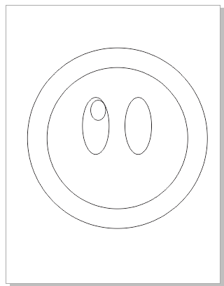

Paso 1: Crea un circulo
Paso 2: Crea otro circulo más grande y centralo encima del anterior
Paso 3: Crea un óvalo y colocalo dentro del primer circulo un poco a la izquierda
Pasa 4: Clona el óvalo anterior y ponlo a la derecha del primero para tener los 2 ojos

Pasa 5: Crea un circulo pequeño y colocalo en la esquina superior izquierda
Paso 6: Repite el paso anterior con el otro ojo
Paso 7: Crea un triangulo y ajustalo en la parte de abajo del circulo más grande
Paso 8: Clona el triangulo anterior y colocalo a la derecha del circulo grande
Paso 9: Haz lo mismo pero del otro lado del circulo grande
Paso 10: Crea un triangulo más pequeño que los anteriores para ajustarlo a las esquinas inferiores y coloca el primero en la esquina inferior derecha
Paso 11: Clona el triangulo del paso anterior y colocala en la esquina inferior izquierda
Paso 12: Crea un triangulo con más altura y colocalo en la parte superior del circulo grande
Paso 13: Clona el triangulo del paso anterior y colocalo en la esquina superior derecha
Paso 14: Repite el paso anterior pero coloca el triangulo en la esquina superior izquierda
Paso 15: Coloca circulos en la punta de los ultimos 3 triangulos creados
Paso Final: Cambia el orden de los objetos creados para que no se oculten algunas figuras
Paso 16: Dale color a las formas